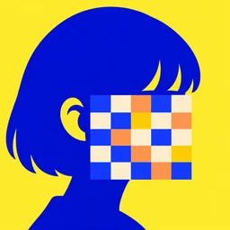
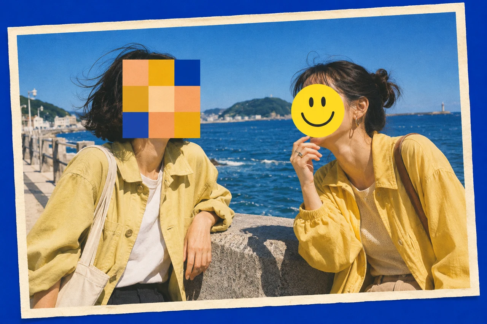

写真に残す顔を選ぶ
写真を開くと顔にモザイクがかかります。顔を出したい人はタップして外せます。顔文字や好きな色で隠すこともできます。

Mosaicできること
写真を開くと顔にモザイクがかかります。顔を出したい人はタップして外せます。顔文字や好きな色で隠すこともできます。
人の動きに合わせてモザイクが移動します。動画は5分まで。書き出すときは広告が表示されます。
保存する前に、撮影日時やカメラの情報を編集できます。位置情報は地図で選び直したり、削除したりできます。
顔の検出と書き出しは端末内で行います。共有する前に仕上がりを確認できます。